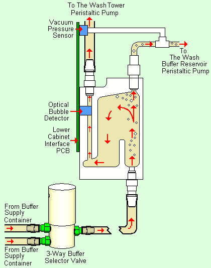
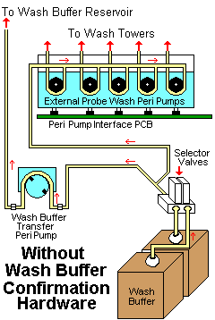
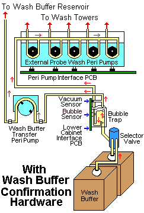

Wash Buffer Confirmation Operating Principles
Purpose
This document details the operating principles for the wash buffer confirmation.
Assembly Function
- Ensure an adequate flow of bubble-free wash buffer to the wash towers for probe washing.
- Initiate an error message when there is a pressure drop at the input to the wash buffer transfer peri-pump. The pressure drop indicates that there has been a loss of wash buffer flow caused by an empty buffer container, kinked tubing, or a leaky or loose fitting.
- Phase 1: Software modifications were incorporated into software version 2.2.2 to monitor the vacuum at the pipettor wash towers during a probe wash.
- Phase 2: The addition of hardware components to monitor the wash buffer supply for air bubbles and correct pressure. The hardware changes were introduced in manufacturing on:
- DxI 800 serial number 600844 and higher.
- All DxI 600 instruments.
Phase 1 and 2 changes were tested concurrently in Chaska. Results showed that each of these changes significantly improved probe wash monitoring. Instruments with software version 2.2.2 or higher, but without the hardware components, adequately monitor the wash towers for bubbles. Therefore, it is not necessary to install the hardware changes on Phase 1 instruments. No MOD or parts kits were created for adding the wash buffer confirmation hardware changes to these instruments.
Assembly Location
- The larger port buffer selector valve is located on the back of the wash buffer supply drawer.
- The bubble trap and sensors are located on the lower cabinet interface PCB behind the liquid waste drawer (access from rear of instrument).
- The larger tubing routes from the of the wash buffer containers to the buffer selector valve and on to the bubble trap.
Wash Buffer Confirmation Components

Operational Overview for Systems with Wash Buffer Confirmation Hardware
- When the wash buffer reservoir float sensor signals for the addition of buffer, the wash buffer transfer peri-pump is powered on. When the wash towers need buffer for probe washing, the external probe wash peri-pumps are powered on.
- Wash buffer is pumped from a buffer supply container through the buffer supply drawer selector valve and into the bubble trap.
- If the wash buffer entering the bubble trap has bubbles, the bubbles rise to the top of the trap near the right port that feeds the wash buffer transfer peri-pump. Any bubbles near this port, exit when the wash buffer transfer peri-pump is powered on. Bubbles in the buffer reservoir float to the top and dissipate or float where they cannot enter the fluidics system.
- A vacuum sensor monitors the pressure on the fluid line exiting the bubble trap to the wash buffer transfer peri-pump. If the vacuum in this line increases, then this error message is generated: Restriction detected in the wash buffer supply line (seen on Phase 2 instruments only).
- When the external probe wash peri-pumps are powered on, wash buffer that has passed through an optical sensor (bubble detector) is pumped out of the top left port to the pumps. If 10 of 40 samples have bubbles, then this error message is posted: Air detected in the wash buffer supply line (on Phase 2 instruments only).
- The wash tower output lines contain vacuum sensors that monitor pressure. The amount of fluid in the wash towers affects the vacuum reading. The more fluid, the higher the pressure. If the pressure in the output line falls below a specified level, then this error message is generated: Reagent Pipettor Wash Tower x vacuum outside limits (on either Phase 1 and Phase 2 instruments).
- When both pumps are off, buffer ceases to flow, and air bubbles in the buffer (if they are present) accumulate near the top right port in the bubble trap.
Buffer Confirmation Diagrams


Component Functions
| Component | Function and Description |
|---|---|
| Bubble Trap | Clear acrylic device used to remove air bubbles from the wash buffer pumped to wash towers.
Buffer enters bubble trap from wash buffer containers via wash buffer container selector valve. Buffer leaves bubble trap and routes to:
|
| PCB, Lower Cabinet Interface | Mounting location for bubble trap, bubble detector, and vacuum sensor.
Provides power to and receives signals from the sensors. |
| Optical Bubble Detector | Monitors wash buffer for presence of air bubbles in buffer pumped to the wash towers. |
| Vacuum Sensor | Monitors the vacuum on wash buffer going to wash buffer transfer peri-pump. Sensor detects the loss of an adequate amount of wash buffer (buffer container empty or draw tube not installed correctly) or a restriction (kinked tubing). |
| Tubing | Larger tubing is used from the buffer supply bottles to the selector valve, and from the selector valve to the bubble trap. The larger tubing improves flow and reduces back pressure. Separate tubes route to the wash buffer transfer peri-pump and the external probe wash peri-pumps. |
| Wash Buffer Selector Valve | Round valve with two threaded inlet ports and one threaded outlet port. Fittings are glued into the threaded ports at the supplier and are not replaceable. The valve has larger ports than the previous two-valve system (less fluid flow restriction). |
Phase 1 Instruments
- Software versions before version 2.2:
This software did not detect if the external wash volume was reduced or absent until the buffer reservoir sensor failed. The vacuum response was measured only to verify that the vacuum pump was operational and that the wash towers were not plugged. Some systems that went undetected could have had reduced or no external wash buffer, which could result in outliers or carryover issues. This issue could have happened if the supply line was empty (bottle empty) or if the line was plugged (the supply line not connected to the bottle draw tube correctly).
- Software version 2.2 and higher (Phase 1 instruments only):
Version 2.2 software uses the vacuum sensors on the five wash tower drain lines to detect loss of external wash buffer during probe washes. The check is called PeriFlow. The PeriFlow check is enabled by default in the process monitoring section of Specific.ini. An additional check called Low Flow Warnings is disabled by default, but can be enabled for troubleshooting. The Low Flow Warnings feature generates an event log message when four of the last ten results were below the warning threshold (subsystem.ini). The error and warning threshold levels are 750/1250 millivolts for the original wash buffer and 250/400 millivolts for Wash Buffer II. This check enables troubleshooting to determine if a borderline failure exists.
| Subject | Details |
|---|---|
| Wash Tower | Vacuum checks performed with limits of 100 to 10000 millivolts. |
| Sample Pipettor | Separate shower wash (SHOW) created that uses no internal wash, but does use 1620 µL for an external wash (two rotations of the peristaltic pump). This is checked:
|
| Reagent Pipettors | Normal short wash (SW) is used, after priming, during unpark (before a run starts), and every short wash during a run. This check uses a 235 µL internal wash and a 1620 µL external wash.
Note: No check is performed during long wash because there is excessive fluid (5 mL) used for the internal probe wash.
|
| PeriFlow Check Data Acquisition | For each PeriFlow check, 400 data points are acquired. The mean of the first 25 data points is called Pre-Fluid. The largest mean of 25 consecutive data points is the fluid Peak-Mean capture. The PeriFlow result is the running average of the last four Peak-Mean values minus the running average of the last four Pre-Fluid values. |
| Retries | After priming and during unpark, if the result is below the warning level (even if warnings is disabled), up to 19 PeriFlow retries are attempted before disabling the pipettor. These retries occur at five-second intervals.
The error message Multiple retries were needed to obtain adequate wash tower flow is displayed. The number of attempts needed is displayed only if Warnings is enabled. |
| Low Flow Warnings | If enabled, then this event log message occurs when four of the last ten PeriFlow results are below the warning threshold:
Wash tower external flow below warning limit.
Note: Although the Low Flow Warning is shown as a warning in the trace files, it is a yellow caution message in the event log.
|
| Low Flow Errors |
|
Phase 2 Instruments
This section provides information for wash buffer confirmation on instruments with serial numbers of 600844 and higher (both phase 1 and 2) and all DxI 600s.
| Subject | Details |
|---|---|
| Lower Cabinet Interface PCB | Bubble detector and vacuum pressure sensor are monitored using analog Ch. 63 by:
|
| Calibration | Bubble detector on bubble trap is calibrated in manufacturing; however, the bubble detector can be calibrated in the field. (Select , and follow the on-screen instructions. |
| Compatibility | Lower Cabinet Interface PCB with bubble trap operates with any software version (2.2 or higher); however:
|
| Flow Detection | Flow detection (performed by bubble detector and vacuum sensor) is enabled under fluid control process monitoring in Specific.ini. After calibration, the wash buffer flow is checked every time the external probe wash peri-pumps operate.
Bubble detector flow is sampled 40 times (whenever the external probe wash peri-pumps operate) to view the wash buffer passing though the bubble detector. If 25% (10) of the views detect air in the buffer, then:
Note: During system initialization after either failure, the message
Air or excessive restriction has compromised wash buffer delivery. Tests cannot run informs the operator that the bubble detector must be primed before tests can be run.
|